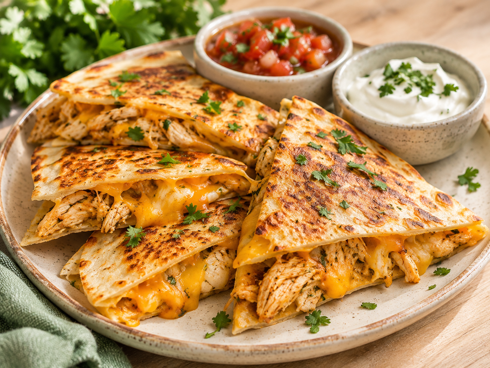

Easy Chicken Quesadillas
Crispy tortillas filled with seasoned cooked chicken and melted cheese.
Budget-friendly • Easy dinner
Jump to recipe
AI-generated serving illustration.Easy Chicken Quesadillas
Prep: 10 min · Cook: 10 min · Total: 20 min (estimated) · Serves 4
Ingredients
- 4 large flour tortillas
- 2 cups cooked shredded chicken
- 1 1/2 cups shredded Monterey Jack or cheddar
- 1 tsp chili powder
- 1/2 tsp ground cumin
- 2 tsp vegetable oil
- Salsa and sour cream, optional
Instructions
- Mix cooked chicken with chili powder and cumin.
- Divide chicken and cheese among one half of each tortilla, then fold closed.
- Heat a large skillet over medium heat. Add a little oil and cook quesadillas in batches for 2–3 minutes per side until golden and cheese melts. Reheat leftover chicken filling to 165°F.
- Cut into wedges and serve with salsa or sour cream.
Budget tip
Use leftover chicken and store-brand tortillas; add drained beans to stretch the filling.
Storage and reheating
Refrigerate leftovers in a shallow airtight container within 2 hours. Use within 3–4 days and reheat to 165°F.